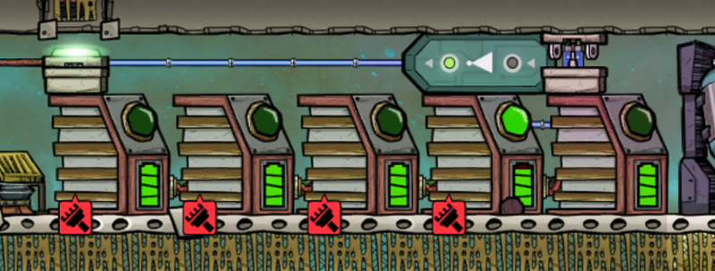
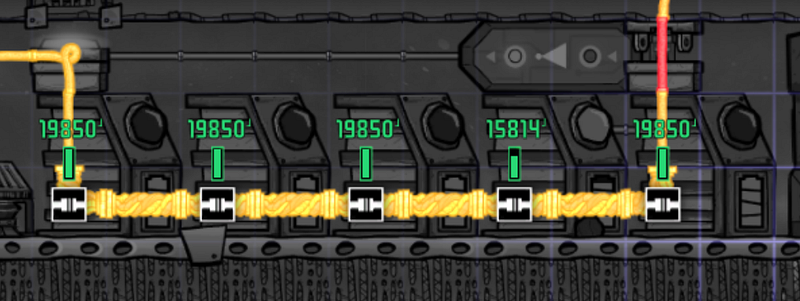
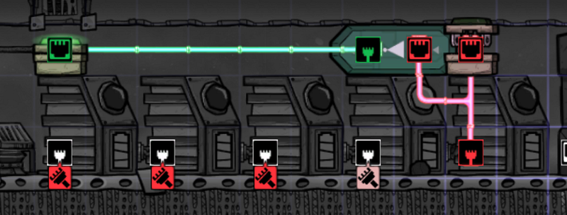

Relaying Power to Existing Infrastructure Without Rewiring Everything
Relaying Power to Existing Infrastructure Without Rewiring Everything
Sometimes you want to relay electricity from a far-off power plant to somewhere else. The “correct” way would be to use a transformer, and to wire everything “correctly”
Well, let’s say you created a proper transformer, and you then proceeded to check out what’s needed to relay that power to your destination. I often find myself looking at an old infrastructure, possibly based on Coal Generator. These are usually a maze of wires — and if I wanted to properly rewire the whole thing, I would need to pretty much re-invent the entire site.
But sometimes you don’t have that luxury. Maybe you can bring that one wire from your power plant, but you just can’t rewire everything.
In such cases, building a battery farm with automatic circuit switching mechanism may save you.
Here’s the idea: You receive electricity from the main power plant only when you need it. The rest of the time, you use a Power Shutoff to basically isolate the battery farm from the power plant. And while you are receiving electricity from the power plant, you switch off access to the existing electricity grid by using another Power Shutoff.



In these pictures, my power plant’s electricity is coming from the right side, and my existing infrastructure is in the left side.
When the Smart Battery thinks it needs recharging, the Power Shutoff on the right side is enabled, and the one of the left is disabled. At this point the battery farm will charge electricity from the power plant, while being isolated from the existing structure. When the batteries are full, the opposite happens, and now the batteries act as if they are part of the existing structure.
The cool thing about this mechanism is that batteries are not counted towards the power consumption going through these wires, so you don’t really have to care how much load is dangling on your wires. It’s like using a mobile battery: you plug it when it’s full, when it’s empty you recharge it, and put it back again. You need no modification to your existing infrastructure.